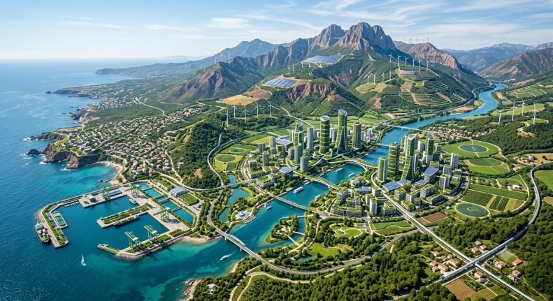
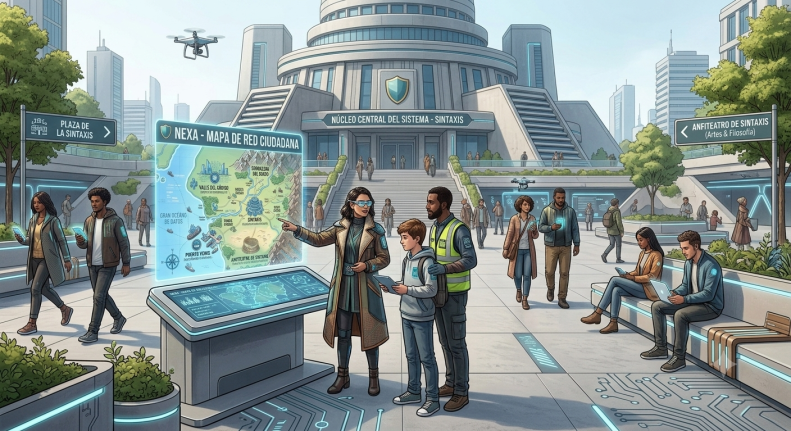
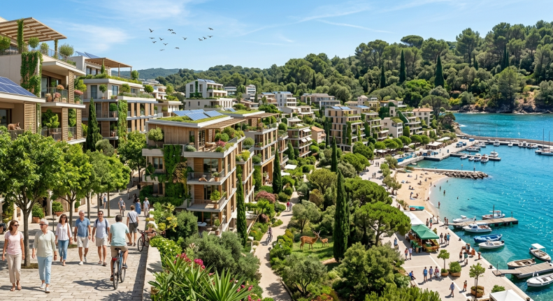
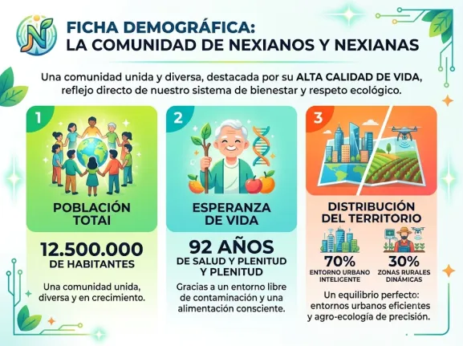

Geografía, Clima y Demografía: El Escenario del Progreso
Nexa no es solo un territorio; es un ecosistema vivo donde la naturaleza y la infraestructura digital coexisten en perfecta armonía. Desde nuestras costas hiperconectadas hasta las cumbres que nos resguardan, cada rincón está diseñado para inspirar.
Puntos Clave y Límites: Un Territorio de Conexiones
Abierto al mundo y protegido por la tierra, Nexa limita al oeste con la inmensidad del océano y al este con la imponente república montañosa de Zonaria. En este espacio privilegiado, la vida se organiza en torno a cuatro grandes centros neurálgicos:
- ● Sintaxis · El Corazón de la Red: Nuestra vibrante capital central. Una metrópolis hiperconectada y completamente sostenible que funciona como el cerebro administrativo y digital de la nación.
- ● Bit-Valle · El Motor de la Innovación: El nodo principal de nuestro desarrollo tecnológico. Aquí se programan las herramientas del mañana en laboratorios rodeados de vegetación.
- ● Puerto Verde · El Abrazo al Mar: Nuestro gran núcleo comercial y marítimo. Un puerto de cero emisiones que conecta el comercio de Nexa con el resto del mundo de forma limpia.
- ● Anfiteatro · La Cuna de las Ideas: El epicentro de las artes, la filosofía y la cultura. Un espacio abierto donde los nexianos celebran la creatividad y el pensamiento libre
Nuestra Arteria Vital: El Río Flujo La geografía del país está marcada por el Río Flujo, una majestuosa corriente de agua pura que atraviesa la nación desde las montañas hasta el mar, simbolizando el movimiento constante de nuestras ideas y nuestra energía limpia.


Clima y Biomas: Un Entorno Inteligente
En Nexa disfrutamos de un clima mediterráneo avanzado. Gracias a un diseño urbano bioclimático y pasivo, nuestras ciudades aprovechan los inviernos suaves y los veranos templados sin necesidad de consumir recursos de forma agresiva. Aquí, el bioma urbano se funde con el bosque y el mar, permitiendo que la fauna local y los ciudadanos compartan el mismo espacio.
Ficha Demográfica: La Sociedad del Bienestar
La comunidad de nexianos y nexianas destaca por su alta calidad de vida, reflejo directo de nuestro sistema de bienestar y respeto ecológico
- ● Población: 12.500.000 de habitantes que forman una comunidad unida y diversa.
- ● Esperanza de Vida: 92 años de salud y plenitud gracias a un entorno libre de contaminación y una alimentación consciente.
- ● Distribución del Territorio: Un equilibrio perfecto donde el 70% de la población habita en entornos urbanos inteligentes y el 30% dinamiza las zonas rurales mediante la agro-ecología de precisión.
